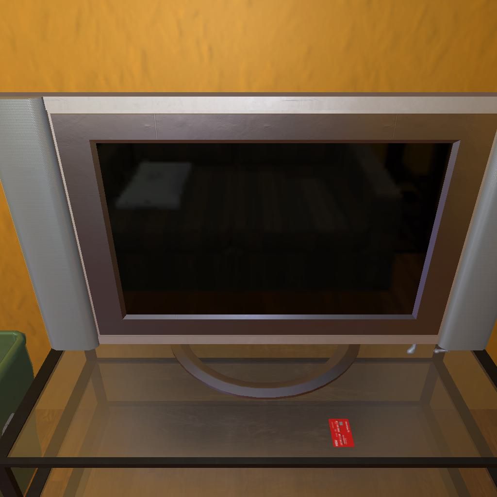

---------------------------------------------------------task: 3---------------------------------------------------------
--------------------------------------------------------------------------------------------------------------------------------------------------------------------
--------------------------------------------------------------------------------------------------------------------------------------------------------------------
Step:--------------------------------------------------------------------------0-------------------------------------------------------------------------------
----------------------------------------
VLM Prompt:
Image1:
**Instruction**
1. Analyze the provided images to identify all visible household objects and compare the difference between images (e.h. whether the object is opened or not and taken on hand or not), focusing on those relevant to the task description "examine the plate with the floorlamp."
2. Use the analysis of images and the task hint "The agent must find an object of the desired type, locate and turn on a light source with the desired object in-hand." to answer the question: what is the most reasonable action in the choices for the task description "examine the plate with the floorlamp"?
3. Decide and write the answer using the template: The answer is: (i): , where i is the real number. If there is no desired object in images, search every place based on **Initial Observation** to find the object. And if no one is exactly correct, choose a similar answer.
**Initial Observation**
You are in the middle of a room. Looking quickly around you, you can see armchair (1), garbagecan (1), tvstand (1), shelf (1-5), sofa (1), coffeetable (1), sidetable (1-2), drawer (1)
**Answer Choices**
(1): go to armchair 1
(2): go to garbagecan 1
(3): go to tvstand 1
(4): go to shelf 1
(5): go to shelf 2
(6): go to sofa 1
(7): go to coffeetable 1
(8): go to sidetable 1
(9): go to sidetable 2
(10): go to drawer 1
(11): go to shelf 3
(12): go to shelf 4
(13): go to shelf 5
**Answer**
Let's think step by step by following the instructions.
----------------------------------------
----------------------------------------
Original Response:
Image1:
The image shows a tvstand with a television on it. There is no visible plate or floorlamp in this image.
Initial Observation:
Based on the initial observation, we are looking for a plate and a floorlamp. The items listed do not include a floorlamp, but it's common for floorlamps to be placed near sofas, armchairs, or sidetables.
Since the task description is "examine the plate with the floorlamp," we need to find the plate first and then locate the floorlamp to turn on the light source.
The most likely places to find a plate could be on the coffeetable, sidetables, or shelves. Since we need to find the object of the desired type (plate) and turn on a light source (floorlamp), we should check the areas where these objects are most likely to be found.
The answer is: (8): go to sidetable 1.
This choice is based on the common placement of floorlamps and the potential for a plate to be located on a sidetable. If the plate is not found there, the next reasonable actions would be to check the coffeetable or the shelves.
----------------------------------------
----------------------------------------
>>> Refine Original VLM Response and Get Pure Action: go to sidetable 1
----------------------------------------
-----------------------------------------------------------------
Running time: 36.47993540763855 seconds
Total Money: 0.6315200000000001
-----------------------------------------------------------------
-----------------------------------------------------------------
Text Observation:You arrive at loc 7. On the sidetable 1, you see a floorlamp 1, a pillow 1, a laptop 1, a vase 1, a statue 1, a plate 1, a statue 2, a cellphone 1, a plate 2, a remotecontrol 1, a keychain 1, and a newspaper 1.
-----------------------------------------------------------------
UNSUCCEED